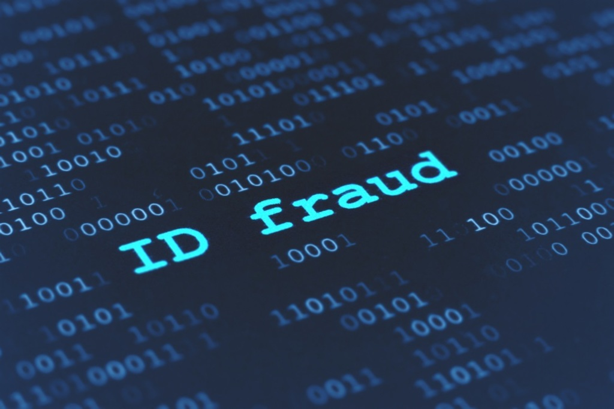

The definition of identity theft is the unauthorized use of someone’s personal data or documents for someone elses personal gain. This can happen to anyone. There are many different ways that your identity can be stolen. We have to be more careful than society in the past as our technology has majorily improved making things easier for thiefs.
How does it affect you?
Once identity thieves grab your personal information, they can empty your bank account, use your your credit cards, open new accounts and even get medical treatment on your health insurance. They can obtain a driver’s license, passport or immigration papers. They might even give your name to the police during an arrest, triggering a legal chain of events that could have a major impact on your life. There are endless possibilities of what thieves can do with your personal information. It’s crucial for everyone to become educated on identify theft.
Different Methods of Identity Theft
There are many other specific, clever methods for thieves to steal your identity or personal information, such as:
- Phishing — Scammers often use phishing emails to trick victims into providing personal or financial information. Phishing emails can be deceiving in that they may appear to come from a known or trusted company, such as a bank or an online retailer, and use various tactics to get the victim to click a link or open an attachment.
- Data Breaches — A data breach is the intentional or unintentional release or theft of information, whether it is due to a cyberattack or simply the improper disposal of physical documents. If an individual is notified of a breach, their financial or personal information may have been exposed. The theft of usernames and passwords from data breaches may also fuel credential stuffing attacks in which criminals use stolen username and password combinations to hack into other accounts.
- Change Of Address — Thieves can fill out change-of-address request forms. Once your mail is sent to them, they can access your personal information.
- Cloning Credit Card Information — An employee of, say, a restaurant, gas station or retail store, can swipe your credit card through a device that copies the magnetic strip information. It can be transferred to a counterfeit credit card, which can make purchases.
- Vishing — Fraudsters can also use phone calls, also known as voice phishing or vishing, to target potential victims. Phone scammers sometimes use promises, like the offer of a prize, or threats, such as the risk of not getting a tax refund, to prompt victims into giving up personal information. Scammers will also use spoofing to send falsified information to a caller ID. A spoofed call looks like it’s coming from a local number or a trusted organization when it could be originating anywhere in the world.
